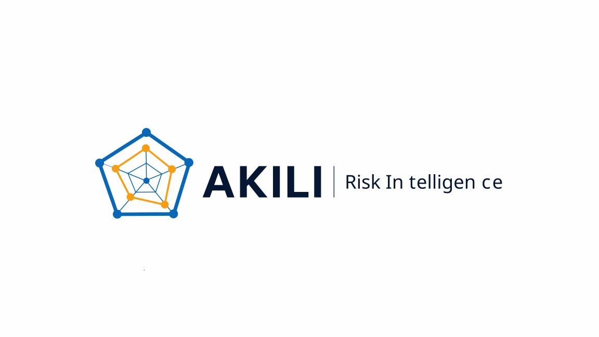
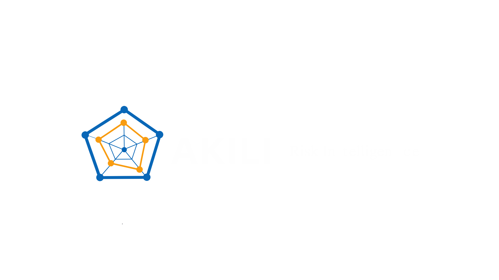

Brand Usage Guidelines
Quick reference · v1Logo Variants
Primary · light backgrounds

Secondary · dark / brand navy
Black · one-colour / print

White · photos / dark UI
Vertical (stacked) versions of all four exist for square or centred layouts. Use vector SVG or PDF whenever possible; PNG for fixed-size web use.
Colour Palette
Primary Blue
#0564B6rgb 5·100·182Accent Orange
#F89C11rgb 248·156·17Ink Navy
#0B0D1Crgb 11·13·28Deep Navy
#061734rgb 6·23·52Blue leads; orange is a sparing accent (roughly 10% of any composition). Navy for text and dark backgrounds.
Typography
Logotype
Montserrat Bold
Tagline
Montserrat Medium
Body
Montserrat Regular — the quick brown fox jumps.
Official typeface: Montserrat — free via Google Fonts (SIL Open Font License). Bold for the logotype, Medium for the tagline. Fallback: Helvetica Neue / Arial.
Clear Space & Minimum Size
Keep clear space around the logo equal to the height of the icon. Nothing intrudes into this zone.
full logo
≥ 120px / 1in wide
≥ 120px / 1in wide
≥ 24px
Below the full-logo minimum, use the icon alone.
Icon / App Mark

The pentagon mark stands alone for favicons, app icons and avatars. Full favicon package in /6-Icon.
Do & Don't
Do
- Use the supplied master files
- Give it room to breathe
- Pick the variant with best contrast
- Scale proportionally
Don't
- Stretch, squash or rotate it
- Recolour or swap the palette
- Add shadows, glows or outlines
- Place on busy / low-contrast areas